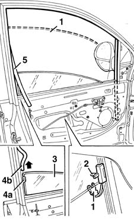

7005D18 front side door descending window glass channel r r
- Path
- Procedures > 70 FITTINGS > 7005 PASSENGER COMPARTMENT FRONT SIDE DOORS > 7005D front side door window glasses > 7005D18 front side door descending window glass channel r r
- Kind
- repair procedure (removal / refitting; the operation number is the code)
- Applies to
- all engines; all production periods
- Interactive page
- https://sloeber94.github.io/elrnDB-fMltpl/en/#/2892034
Applies to: all engines; all production periods
 Removing
Removing
 Refitting
Refitting7005M10 driver's side front side door glass control switch (one) r r
7005C53 interior opening handle - r r
7005E22 l/h or r/h front door panel radio grille (one) - r+r
7005E38 front side door interior handle-r r
7005C62 front side door safety catch knob and seal r r
7005E34 internal or external panel on front side door frame r r
7005E10 front side door inner panel - r r for replacement
7005A04 front side door water guard protection - r r or replace with door panel removed
7005E30 object pouch on one front side door r r
7005D22 front side door descending window glass guide (one) - r r with door panel (and support frame) removed (rear guide)
7005D26 front side descending window glass scraper (outer) r r
1. Open the window glass about 1/4 of the way, then disconnect the safety retainer from the window glass.
2. Disconnect the window glass from the drive pin.
3. Lower the window completely by hand.
4. Disengage the fixing piece (4a) of the window glass from the rear (4b) of the run channel, prising off and raising the end of the channel.
5. Prise off all the window glass channel.

Applies to: all engines; all production periods
Refitting
RemovingCheck that the channel is undamaged.
Fit the window glass channel, starting from the front.
Engage the window's fixing piece in the rear of the run channel and slide the window upwards.
Open the window about 1/4 of the way and connect it to the drive pin.
Connect the window's safety retainer.
7005D26 front side descending window glass scraper (outer) r r
7005D22 front side door descending window glass guide (one) - r r with door panel (and support frame) removed (rear guide)
Check that the window works properly.
7005E30 object pouch on one front side door r r
7005A04 front side door water guard protection - r r or replace with door panel removed
7005E10 front side door inner panel - r r for replacement
7005E34 internal or external panel on front side door frame r r
7005C62 front side door safety catch knob and seal r r
7005E38 front side door interior handle-r r
7005E22 l/h or r/h front door panel radio grille (one) - r+r
7005C53 interior opening handle - r r
7005M10 driver's side front side door glass control switch (one) r r
Topics linked from this page (12)
- 5570T90 front speaker - r r
- 7005A04 front side door water guard protection - r r or replace with door panel removed
- 7005C53 interior opening handle - r r
- 7005C62 front side door safety catch knob and seal r r
- 7005D22 front side door descending window glass guide (one) - r r with door panel (and support frame) removed
- 7005D26 front side descending window glass scraper (outer) r r
- 7005E10 front side door inner panel - r r for replacement
- 7005E22 l/h or r/h front door panel radio grille (one) - r+r
- 7005E30 object pouch on one front side door r r
- 7005E34 internal or external panel on front side door frame r r
- 7005E38 front side door interior handle-r r
- 7005M10 driver's side front side door glass control switch (one) r r